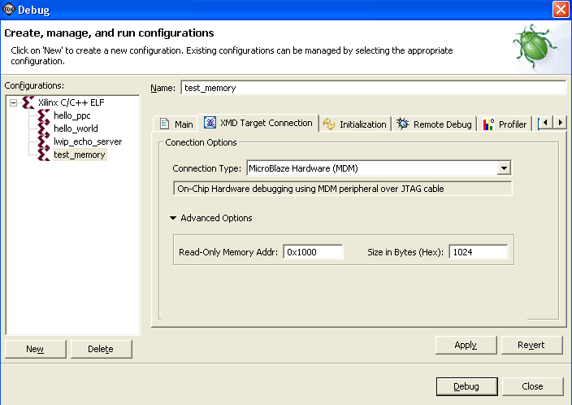
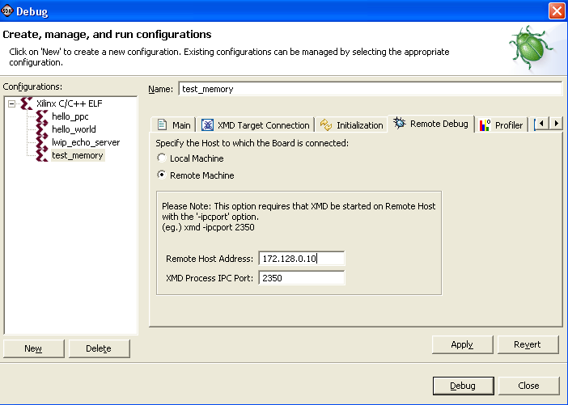

Specifying XMD target configuration
To configure the XMD Target options, do the following:
- In the C/C++ Projects view, select a project.
- Select Run > Run or Run > Debug.
- In the Configurations
box, expand Xilinx C/C++
ELF.
- Select a run or debug configuration.
- Click the XMD Target
Connection tab.

- Do the following:
- In the Connection
Type drop-down list, choose to execute the
application on the hardware, Simulator, or XMDStub (MicroBlaze only) target.
- Click Advanced Options to view the advanced configuration options you can provide for each communication target type:
- To specify the Read-Only Memory address range, type
the start address in the Addr box and size of the memory
(in bytes) in the Size in Bytes box.
- To specify the Memory Mapping for PowerPC
resources for a PowerPC target, specify the start addresses in the I-Cache Addr, D-Cache Addr,
I-Tag Addr, D-Tag Addr, DCR addr, and TLB Addr
boxes. The ISOCM addresses for PowerPC 405 is
automatically inferred for the system.
- To specify the Configuration File for a PowerPC
simulator target, specify the configuration file in the PowerPC
Simulator Config File box.
- To specify the XMDStub options
for MicroBlaze XMDStub targets:
- To select the mode of communication select either Use JTAG
or Use Serial.
- For Serial Communication, specify the
serial port to use on the host machine and the
baud rate of the serial communication.
- For JTAG Communication, the options are inferred
from Configure JTAG Settings dialog box.
-
Click the Remote Debug tab. (This
applies to debugging only.)

- Do the following:
- Select Remote
Machine to connect to a XMD running remotely.
- Specify the remote host IP address and XMD process IPC port number.
- Click Apply to save these settings.

Debug overview
Run overview
Profile overview

Creating or editing a Run/Debug/Profile configuration
Debugging
Running a program
Profiling
Configure JTAG settings
Copyright © 1995-2009 Xilinx, Inc. All rights reserved.